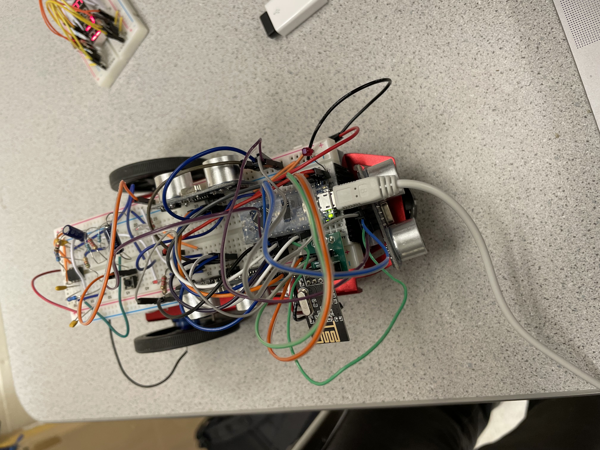
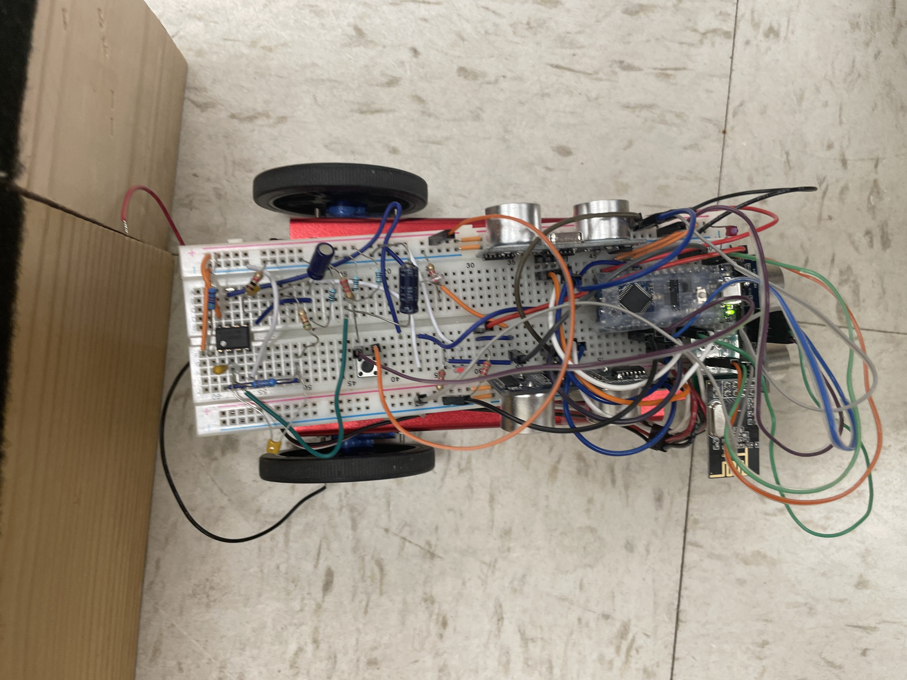
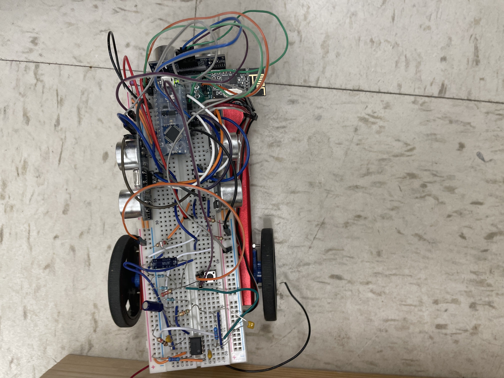
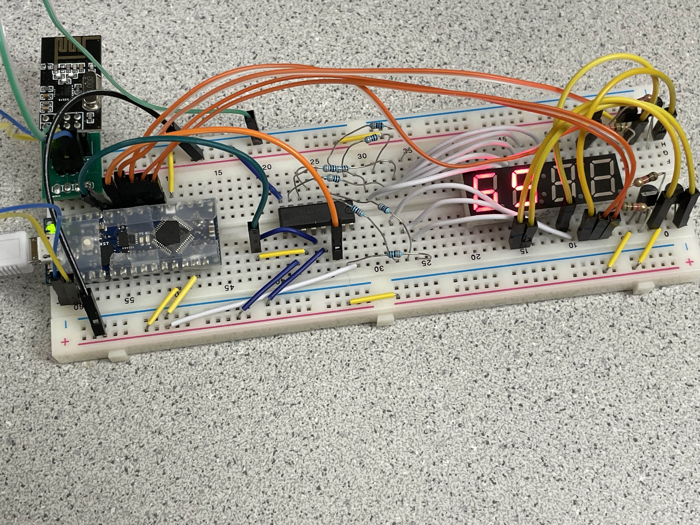
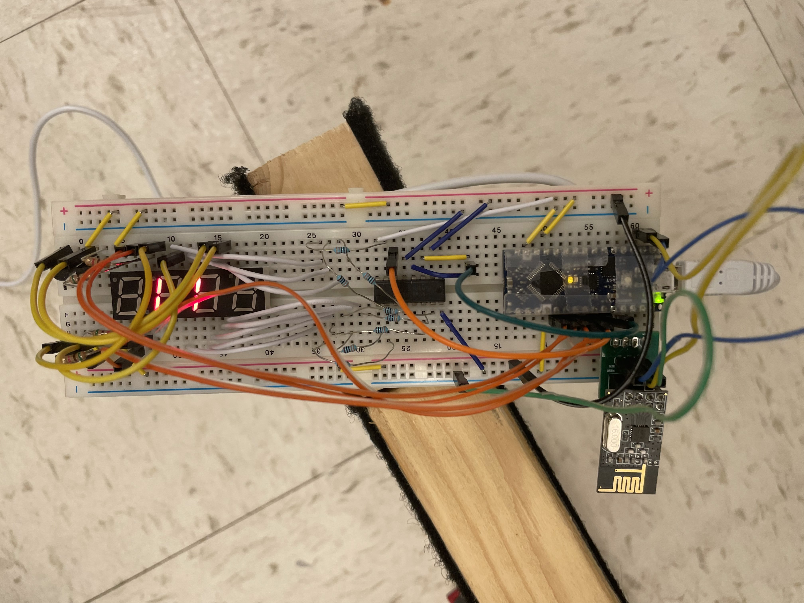

Summary
There were two main goals for lab 4. The first one was to work on the RF Communication between the Robot and the Base Station. The second one was to combine our codes from lab 1 through lab 4 so that our robot and base station would hold all functionality used in all these labs. A more detailed list of the second main goal is shown below.
- Implement Right Wall Following Navigation Algorithm using lab 1 as a starting point
- Install an override start button
- Include ultrasonic sensor functionality
- Include phototransistor functionality
- Include RF communication functionality
- Display the frequency obtain from the phototransistor in the base station through the RF communication and 7-seg display
- Include microphone functionality
- Finalize our onboard FFT
All these functionalities were for the purpose of navigating through the maze and finding treasures.
- The FFT would be used to detect the starting note of the melody using the microphone functionality that would make the robot to start moving and navigating through the maze.
- If FFT fails, the override start button would be used.
- The ultrasonic sensor would be used as part of the navigation process.
- The phototransistors are used to find treasures which are unique frequency generators.
- The frequency found from the phototransistors would be sent to the base station using the RF communication devices
- The frequency value would displayed in the base station.
- The robot would stop navigating once all treasures are found.
Detailed Summary of the Process of the Summary
When implementing the RF Communication between the Robot and the Base Station we first construct two RF communication devices and connected them to the Robot and the Base Station. Each RF communication devices consisted of 4-pin and 3-pin that has been snapped off from row of headers, PCB adapters, RF transceiver, 8-pin header receptacle and RF PCB adapter. Each RF communication device was made by using RF PCB adapter as the base, soldering the necessary pins onto the device, then attaching rest of the components onto the pins. We finally attached each RF communication devices directly onto The Robot and the Base Station and then connected the rest of the pins on the RF communication device using jumper wires. The RF communication device is shown in bottom left of the breadboard in figure 1 for the robot. The RF communication device is shown in top right of the breadboard in figure 4 for the base station.
Afterwards, we implemented our RF communication codes into the base station and the Robot and tested if it worked and debugged from there.
We have spent some time from fixing our the wiring of our robot and base station to make our robot look neater and make replacement of individual parts easier as shown in Figure 1~5. There were two cases in which we had to switch out our US sensors and our Arduino Nano Every because they started malfunctioning. Having a clean wiring made the replacement easier.
We then implemented the right wall following navigation code in which the robot would prioritize right turn every time a right turn is possible, else it would keep going forward and if moving forward is no longer available it would turn left. If turning right, moving forward, turning left is not available, it would perform a one hundred eighty degree turn. In this part of the process, the robot would mainly rely on the servos and us sensors. This process is shown in figure 6.
We then included an override button in the Robot so that the robot would start navigating as soon as the override button is pressed.
We then attempted to implement our FFT code in which the Robot would start moving when a specific note is played in the melody. We were trying to make the Robot start navigating when the note 950 Hz was played.
Then we combine our RF communication funcationality, phototransistor functionality and navigation so that we would be able to pick up the frequency value through the phototransistor once the robot gets close to the treasure as the robot was navigating through the maze and send that frequency value using RF communication funcationality.
Finally, we fixed our Base Station code so that it would be able to display through 7-segement display that values it receive. Once the robot finishes finding all treasures, which was two for our case, the robot would stop moving and blink through the built-in arduino LED. This was the end of lab 4 for us.
Visuals
Visuals are full of the final product of robot and base station with all the functionality included
Figure 1: Display of the Robot with all its funtionality wired
Figure 2: Display of the Robot at a different angle with all its funtionality wired
Figure 3: Display of the Robot at a different angle with all its funtionality wired
Figure 4: Display of the Base Station with all its funtionality wired
Figure 5: Display of the Base Station at a different angle with all its funtionality wired
Figure 6: Video of the Robot trying to navigate through the maze with the right wall following navigation
Reflection
I believe that this lab was the hardest lab out of the four labs. A lot of time were spent debugging the code because even though our code seemed to work individually by themselves, (such as the the microphone code functionality by itself, the phototransister code functionality by itself, etc..) once we were trying to piece everything together, the code seemed to conflict with one another.